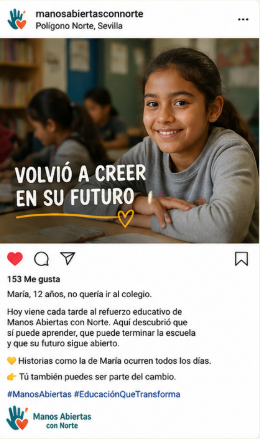
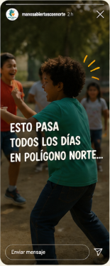
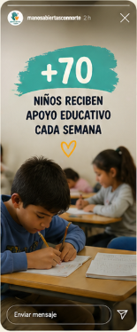
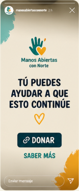

Aula de convivencia
Alumnos expulsados de centros educativos siguen sus tareas con el equipo y participan en dinámicas de reinserción escolar.
Auditoría, estrategia y prototipos para una ONG que lleva 32 años cuidando del Polígono Norte de Sevilla.

Proyecto · 2025 32Tómate un minuto. Haz un quiz corto que te dice honestamente si esta propuesta de voluntariado encaja con tu perfil. Después, durante la presentación, te contamos cómo llegamos a ella.
Te decimos si esta propuesta encaja con tu perfil — y a partir del resultado, te abrimos la landing.
Fundada en 1992 por un grupo de jóvenes que detectaron necesidades sociales en el barrio. Forma parte de la Red de Obras Socioeducativas de La Salle.
Educan integralmente a niños y jóvenes en situación de vulnerabilidad como medio para prevenir consumo, abandono escolar y exclusión social. Atienden también a familias, población gitana e inmigrante.
Alumnos expulsados de centros educativos siguen sus tareas con el equipo y participan en dinámicas de reinserción escolar.
Talleres temáticos y un plan lector para mejorar las perspectivas escolares de los niños del Polígono.
Padres y madres reflexionan sobre su rol educativo para reforzar en casa lo aprendido en el centro.
Jornadas de formación e información para los 40 voluntarios, motor real de los proyectos.
Cada julio: campamento y escuela de verano con dinámicas educativas, ocio y tiempo libre conducidas por voluntariado.
No tenemos una identidad
institucional definida.
Comunicamos desde la improvisación.
Diagnóstico inicial · entrevistas al equipo de Manos Abiertas con Norte, octubre 2025
No hay paleta, tipografías ni manual de marca. Cada pieza se diseña desde cero, sin coherencia.
Saben qué hacen y por qué, pero no han traducido la misión a un relato con valor periodístico.
Limitaciones presupuestarias: la comunicación recae en personal técnico ya saturado de tareas socioeducativas.
Determinar la capacidad real de la comunicación digital de la ONG para sostener la captación de donaciones y voluntariado.
Narrativa institucional, línea gráfica y tono. Verificar su capacidad para generar confianza en potenciales donantes.
Especialmente con voluntarios y posibles donantes en el entorno digital: redes sociales, web y email.
Identificar palancas concretas de la estrategia digital para aumentar visibilidad, credibilidad y apoyo económico.
Auditoría sobre identidad, conversión, mantenimiento y SEO. La distancia no es de presupuesto, es de mirada.
La diferencia no es solo estética: cada criterio fallido es un punto donde un donante potencial decide no continuar.
Toda ONG madura convierte seguidor → suscriptor → donante por email. Aquí vemos el flujo completo del referente y dónde se interrumpe el nuestro.
1 384 IG · 1 087 FB
Sin link bio funcional
Sin formulario en la web
No existe
Solo IBAN en sidebar
+ 375 000 cuentas
Linktree · CTAs en bio
Landing + popup · captura activa
Por tipo de público + bienvenida
Hazte socio · Apadrina · Dona
Storytelling humano: testimonios de niños, voluntarios y familias. Reels y carruseles cargados emocionalmente.
Datos de impacto, behind the scenes, micro-entrevistas al equipo técnico. Mezcla de gráficas e imagen de archivo.
Llamadas a la acción claras: hazte voluntario, dona, comparte. Estructura narrativa de cuatro tiempos: gancho, historia, impacto, CTA.
Vídeos testimoniales, micro-historias del barrio, días en la vida de…
Behind the scenes, gráficos semanales, micro-entrevistas al equipo técnico.
Vídeos clave con CTA: dona, hazte voluntario, comparte para amplificar.
Foto de grupo en el aula. Pie informativo. Cero hooks. Cero rostros con nombre. Cero motivación para compartir.
Una historia con nombre, edad y tiempo verbal. Vídeo orgánico cercano. Estructura: gancho, transformación, CTA.



Reels, storytelling y carruseles. Primer punto de contacto.
Difusión a familias y socios del barrio.
Empresas, financiadores y voluntariado cualificado.
Mini-documentales y archivo audiovisual.
Contenido espontáneo, día a día del centro.
El primer trimestre de implementación.
Manos Abiertas con Norte no cuenta hoy con un equipo de comunicación. Por eso proponemos un Laboratorio de Comunicación Social en alianza con la Universidad de Sevilla, donde estudiantes de comunicación participen activamente en la implementación de la estrategia digital.
Si esta presentación moviliza, deja huella o dispara preguntas, ya valió la pena. Las respuestas, las construimos juntos.
Haz el quiz y entra a la landing.
lucasgorod.github.io/manos-abiertas-lab/quiz.html